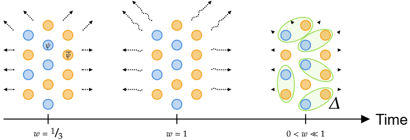

Fernando Garcia Cortez
Ongoing work: Information content within the dark energy sector
As part of a first application of the differentiable code below, I have been developing tools to analyze what we call the "dark energy sector" from a model-independent, information-driven approach. This project aims to provide a new angle at tensions, model preferences, model selection, and within-model degeneracies.
Ongoing work: Cosmology differentiable code
I have been developing fully differentiable CMB cosmology code. Differentiability opens the door to many possibilities, such as faster parameter estimation and computation of sensitivities, but most importantly, it allows us to constrain models with an immense number of parameters and tough posteriors.
Ongoing work: BCS inspired dark matter
Following the work in my undergraduate honors thesis, I am running statistical analysis of a model of dark matter based on the BCS theory of superconductivity. Stay tuned for the paper, coming out late september/early october.

Other interests
Beyond my day-to-day research, I am interested in other topics such as renormalization group ideas in cosmology, galactic dynamics, AI methods in physics.
Previous work
In the past, I have worked on thermal field theory, neutrino physics in a cosmological context, applications of representation theory to quantum field theory, as well as some geophysics and photonics.